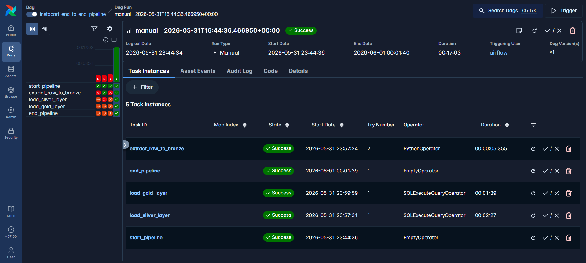
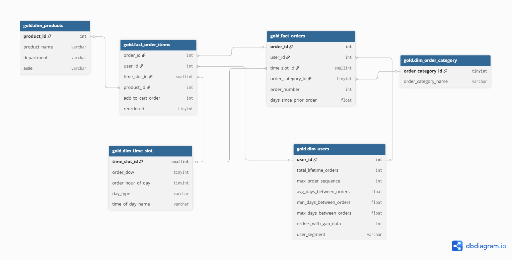
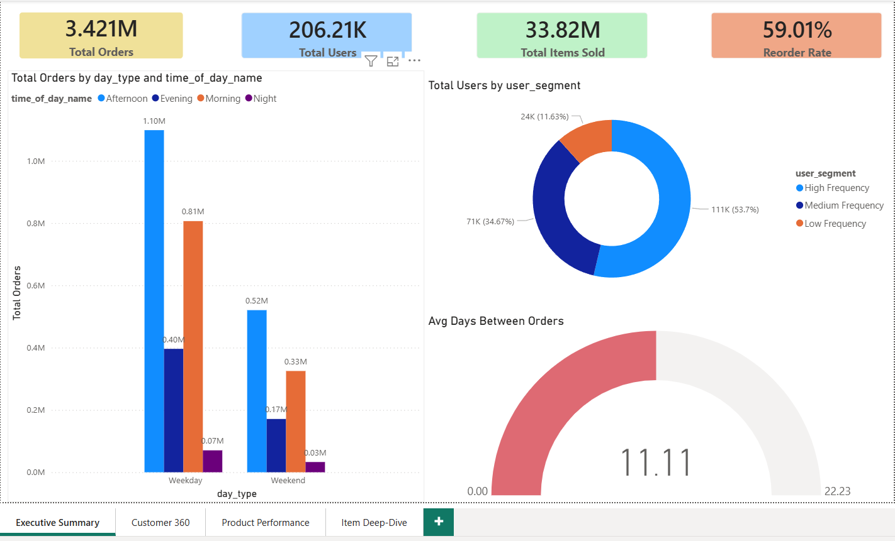
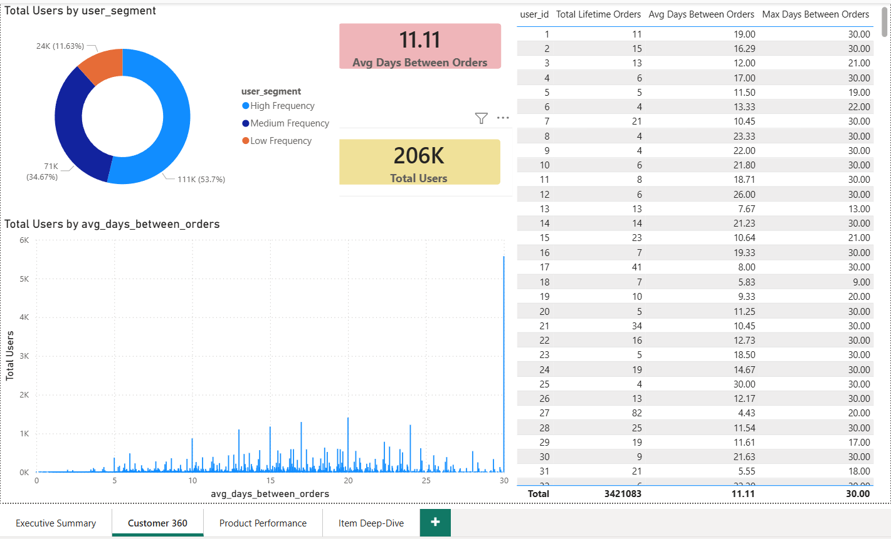
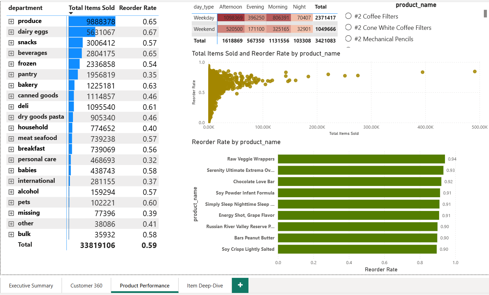
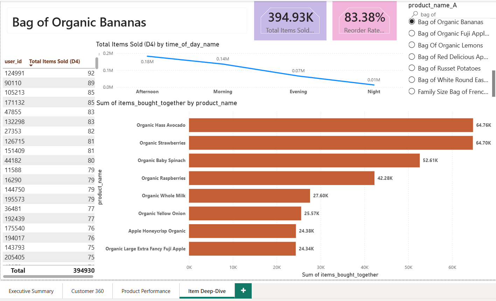

Case study at a glance
- Problem
- Make grocery transactions usable for purchasing analysis.
- Approach
- Built a Python/SQL Server pipeline, orchestrated with Airflow.
- Implementation
- Tools and techniques: Data Warehouse, Apache Airflow, Power BI, SQL Server, Python, Docker.
- Outcome
- An analytical star schema and Power BI reports for customer and product exploration.
Project Overview
This project is an end-to-end Data Engineering and Data Analytics solution built around the famous Instacart Market Basket dataset. The primary goal is to build a robust, scalable automated data pipeline that processes over 34 million rows of transactional data, transforming it into a business-ready Star Schema.
It uncovers actionable insights regarding customer purchasing behaviors. This demonstrates the capability to conceptualize, design, and implement a full-stack data project suitable for real-world enterprise environments.
System Architecture
The project strictly implements the Medallion Architecture pattern (Bronze ➔ Silver ➔ Gold), orchestrated dynamically via Apache Airflow running in a Dockerized environment.

View full size ↗🥉 1. Bronze Layer (Raw Data Ingestion)
- Tooling: Python (Pandas/SQLAlchemy)
- Methodology: Scans
1_Inbound_Datafor raw CSV drops, safely buffers raw data by moving it to2_Processing_Data. - Chunking: To prevent memory crashes when handling the massive
order_productsdataset (32.4M+ rows), data is read and ingested incrementally using Pandas Chunks (150,000 rows/chunk). - Idempotency & Audit: Appends strict audit trails (
_source_file_name,_etl_load_datetime). Processed files are moved to3_Archive_Dataor routed to4_Error_Data.
🥈 2. Silver Layer (Cleansing & Structuring)
- Tooling: SQL Server (Stored Procedures)
- Methodology: Standardizes data types, logically merges datasets utilizing high-performance
UNION ALL. - Columnstore Indexes: Implements Clustered Columnstore Index (CCI) on the massive 33.8 million row orders table. This dramatically compresses data and reduces I/O bottleneck, acting as a massive performance tuner for downstream analytical queries.
🥇 3. Gold Layer & Star Schema
Constructs a highly optimized Star Schema supporting BI reporting.
dim_products: Denormalizes Snowflake structure (Products + Departments + Aisles).dim_users: Extracted implicitly representing customers with lifetime aggregated logic.dim_time_slot: Derived dimensional logic mapping out 'Weekend vs Weekday' and 'Morning/Afternoon/Evening/Night' buckets.fact_order_items: The optimized heavy-lifting fact table storing every product interaction.

View full size ↗⚙️ Tech Stack & Skills Showcased
📊 Analytical Capabilities & Power BI Dashboard Gallery
The pipeline powers a comprehensive BI reporting suite extracting business patterns like Product Affinities, Reorder Trends, and Temporal Patterns.

View full size ↗
View full size ↗
View full size ↗
View full size ↗